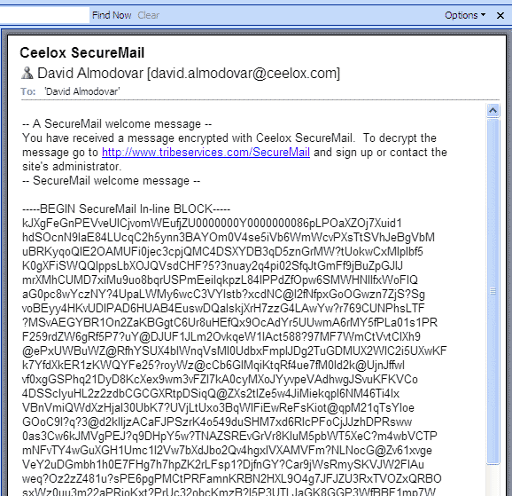

Gpg
# 生成密钥
gpg --gen-key
# 罗列密钥
gpg --list-keys
# 导出
gpg --armor --output public-key.txt --export
gpg --armor --output private-key.txt --export-secret-keys
GPG入门教程¶
作者： 阮一峰
前两篇文章，我介绍了RSA算法。
今天，就接着来看，现实中怎么使用这个算法，对信息加密和解密。这要用到GnuPG软件（简称GPG），它是目前最流行、最好用的加密工具之一。
一、什么是GPG

要了解什么是GPG，就要先了解PGP。
1991年，程序员Phil Zimmermann为了避开政府监视，开发了加密软件PGP。这个软件非常好用，迅速流传开来，成了许多程序员的必备工具。但是，它是商业软件，不能自由使用。所以，自由软件基金会决定，开发一个PGP的替代品，取名为GnuPG。这就是GPG的由来。
GPG有许多用途，本文主要介绍文件加密。至于邮件的加密，不同的邮件客户端有不同的设置，请参考Ubuntu网站的介绍。
本文的使用环境为Linux命令行。如果掌握了命令行，Windows 或 Mac OS 客户端，就非常容易掌握。GPG并不难学，学会了它，从此就能轻松传递加密信息。建议读者一步步跟着教程做，对每条命令都自行测试。

二、安装
GPG有两种安装方式。可以下载源码，自己编译安装。
./configure make make install
也可以安装编译好的二进制包。
# Debian / Ubuntu 环境 sudo apt-get install gnupg
# Fedora 环境 yum install gnupg
安装完成后，键入下面的命令：
gpg --help
如果屏幕显示GPG的帮助，就表示安装成功。
三、生成密钥
安装成功后，使用gen-ken参数生成自己的密钥。
gpg --gen-key
回车以后，会跳出一大段文字：
gpg (GnuPG) 1.4.12; Copyright (C) 2012 Free Software Foundation, Inc. This is free software: you are free to change and redistribute it. There is NO WARRANTY, to the extent permitted by law.
请选择您要使用的密钥种类： (1) RSA and RSA (default) (2) DSA and Elgamal (3) DSA (仅用于签名) (4) RSA (仅用于签名) 您的选择？
第一段是版权声明，然后让用户自己选择加密算法。默认选择第一个选项，表示加密和签名都使用RSA算法。
然后，系统就会问你密钥的长度。
RSA 密钥长度应在 1024 位与 4096 位之间。 您想要用多大的密钥尺寸？(2048)
密钥越长越安全，默认是2048位。
接着，设定密钥的有效期。
请设定这把密钥的有效期限。 0 = 密钥永不过期
= 密钥在 n 天后过期 w = 密钥在 n 周后过期 m = 密钥在 n 月后过期 y = 密钥在 n 年后过期 密钥的有效期限是？(0)
如果密钥只是个人使用，并且你很确定可以有效保管私钥，建议选择第一个选项，即永不过期。回答完上面三个问题以后，系统让你确认。
以上正确吗？(y/n)
输入y，系统就要求你提供个人信息。
您需要一个用户标识来辨识您的密钥；本软件会用真实姓名、注释和电子邮件地址组合成用户标识，如下所示： "Heinrich Heine (Der Dichter) heinrichh@duesseldorf.de"
真实姓名： 电子邮件地址： 注释：
"真实姓名"填入你姓名的英文写法，"电子邮件地址"填入你的邮件地址，"注释"这一栏可以空着。
然后，你的"用户ID"生成了。
您选定了这个用户标识： "Ruan YiFeng yifeng.ruan@gmail.com"
我的"真实姓名"是Ruan YiFeng，"电子邮件地址"是yifeng.ruan@gmail.com，所以我的"用户ID"就是"Ruan YiFeng yifeng.ruan@gmail.com"。系统会让你最后确认一次。
更改姓名(N)、注释(C)、电子邮件地址(E)或确定(O)/退出(Q)？
输入O表示"确定"。
接着，系统会让你设定一个私钥的密码。这是为了防止误操作，或者系统被侵入时有人擅自动用私钥。
您需要一个密码来保护您的私钥：
然后，系统就开始生成密钥了，这时会要求你做一些随机的举动，以生成一个随机数。
我们需要生成大量的随机字节。这个时候您可以多做些琐事(像是敲打键盘、移动鼠标、读写硬盘之类的)，这会让随机数字发生器有更好的机会获得足够的熵数。
几分钟以后，系统提示密钥已经生成了。
gpg: 密钥 EDDD6D76 被标记为绝对信任 公钥和私钥已经生成并经签名。
请注意上面的字符串"EDDD6D76"，这是"用户ID"的Hash字符串，可以用来替代"用户ID"。
这时，最好再生成一张"撤销证书"，以备以后密钥作废时，可以请求外部的公钥服务器撤销你的公钥。
gpg --gen-revoke [用户ID]
上面的"用户ID"部分，可以填入你的邮件地址或者Hash字符串（以下同）。
四、密钥管理
4.1 列出密钥
list-keys参数列出系统中已有的密钥．
gpg --list-keys
显示结果如下：
/home/ruanyf/.gnupg/pubring.gpg¶
pub 4096R/EDDD6D76 2013-07-11 uid Ruan YiFeng yifeng.ruan@gmail.com sub 4096R/3FA69BE4 2013-07-11
第一行显示公钥文件名（pubring.gpg），第二行显示公钥特征（4096位，Hash字符串和生成时间），第三行显示"用户ID"，第四行显示私钥特征。
如果你要从密钥列表中删除某个密钥，可以使用delete-key参数。
gpg --delete-key [用户ID]
4.2 输出密钥
公钥文件（.gnupg/pubring.gpg）以二进制形式储存，armor参数可以将其转换为ASCII码显示。
gpg --armor --output public-key.txt --export [用户ID]
"用户ID"指定哪个用户的公钥，output参数指定输出文件名（public-key.txt）。
类似地，export-secret-keys参数可以转换私钥。
gpg --armor --output private-key.txt --export-secret-keys
4.3 上传公钥
公钥服务器是网络上专门储存用户公钥的服务器。send-keys参数可以将公钥上传到服务器。
gpg --send-keys [用户ID] --keyserver hkp://subkeys.pgp.net
使用上面的命令，你的公钥就被传到了服务器subkeys.pgp.net，然后通过交换机制，所有的公钥服务器最终都会包含你的公钥。
由于公钥服务器没有检查机制，任何人都可以用你的名义上传公钥，所以没有办法保证服务器上的公钥的可靠性。通常，你可以在网站上公布一个公钥指纹，让其他人核对下载到的公钥是否为真。fingerprint参数生成公钥指纹。
gpg --fingerprint [用户ID]
4.4 输入密钥
除了生成自己的密钥，还需要将他人的公钥或者你的其他密钥输入系统。这时可以使用import参数。
gpg --import [密钥文件]
为了获得他人的公钥，可以让对方直接发给你，或者到公钥服务器上寻找。
gpg --keyserver hkp://subkeys.pgp.net --search-keys [用户ID]
正如前面提到的，我们无法保证服务器上的公钥是否可靠，下载后还需要用其他机制验证．
五、加密和解密
5.1 加密
假定有一个文本文件demo.txt，怎样对它加密呢？
encrypt参数用于加密。
gpg --recipient [用户ID] --output demo.en.txt --encrypt demo.txt
recipient参数指定接收者的公钥，output参数指定加密后的文件名，encrypt参数指定源文件。运行上面的命令后，demo.en.txt就是已加密的文件，可以把它发给对方。
5.2 解密
对方收到加密文件以后，就用自己的私钥解密。
gpg --decrypt demo.en.txt --output demo.de.txt
decrypt参数指定需要解密的文件，output参数指定解密后生成的文件。运行上面的命令，demo.de.txt就是解密后的文件。
GPG允许省略decrypt参数。
gpg demo.en.txt
运行上面的命令以后，解密后的文件内容直接显示在标准输出。
六、签名
6.1 对文件签名
有时，我们不需要加密文件，只需要对文件签名，表示这个文件确实是我本人发出的。sign参数用来签名。
gpg --sign demo.txt
运行上面的命令后，当前目录下生成demo.txt.gpg文件，这就是签名后的文件。这个文件默认采用二进制储存，如果想生成ASCII码的签名文件，可以使用clearsign参数。
gpg --clearsign demo.txt
运行上面的命令后 ，当前目录下生成demo.txt.asc文件，后缀名asc表示该文件是ASCII码形式的。
如果想生成单独的签名文件，与文件内容分开存放，可以使用detach-sign参数。
gpg --detach-sign demo.txt
运行上面的命令后，当前目录下生成一个单独的签名文件demo.txt.sig。该文件是二进制形式的，如果想采用ASCII码形式，要加上armor参数。
gpg --armor --detach-sign demo.txt
6.2 签名+加密
上一节的参数，都是只签名不加密。如果想同时签名和加密，可以使用下面的命令。
gpg --local-user [发信者ID] --recipient [接收者ID] --armor --sign --encrypt demo.txt
local-user参数指定用发信者的私钥签名，recipient参数指定用接收者的公钥加密，armor参数表示采用ASCII码形式显示，sign参数表示需要签名，encrypt参数表示指定源文件。
6.3 验证签名
我们收到别人签名后的文件，需要用对方的公钥验证签名是否为真。verify参数用来验证。
gpg --verify demo.txt.asc demo.txt
举例来说，openvpn网站就提供每一个下载包的gpg签名文件。你可以根据它的说明，验证这些下载包是否为真。
七、参考文档
-
Paul Heinlein, GPG Quick Start
-
Ubuntu help，GnuPrivacyGuardHowto
-
KNL, GnuPG Tutorial
-
Alan Eliasen. GPG Tutorial
（完）